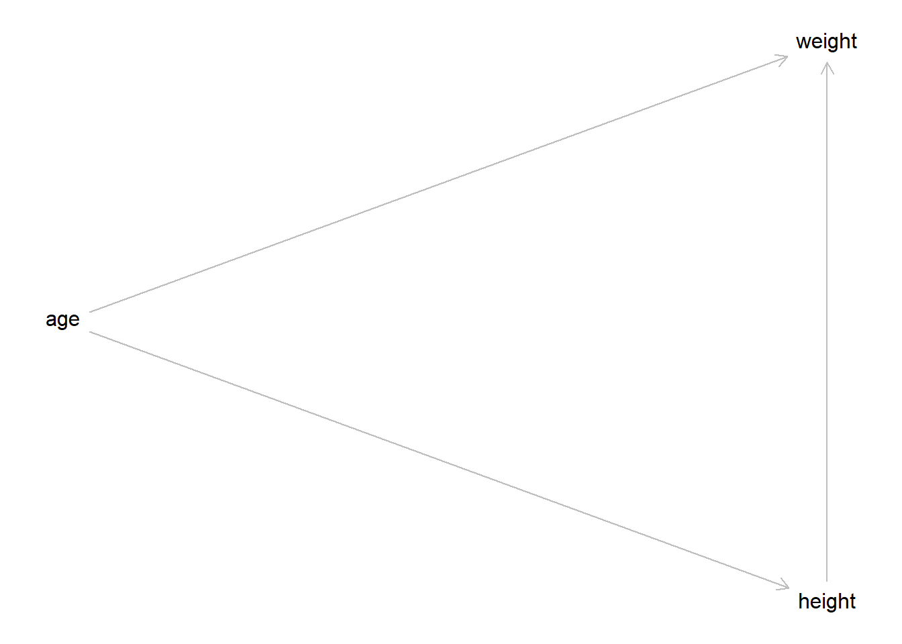
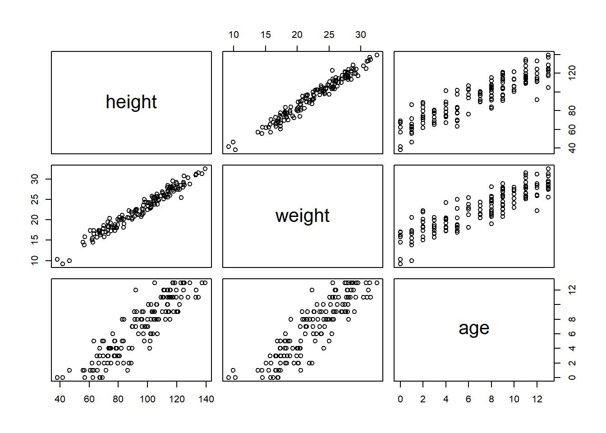
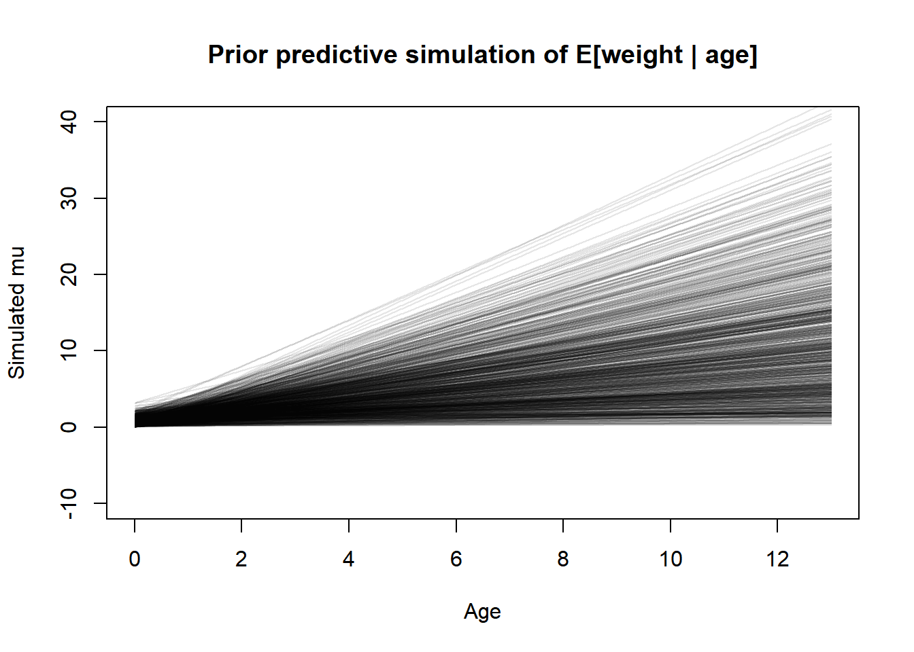
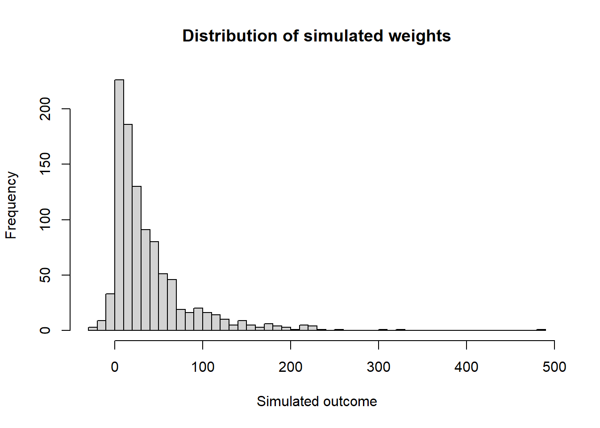
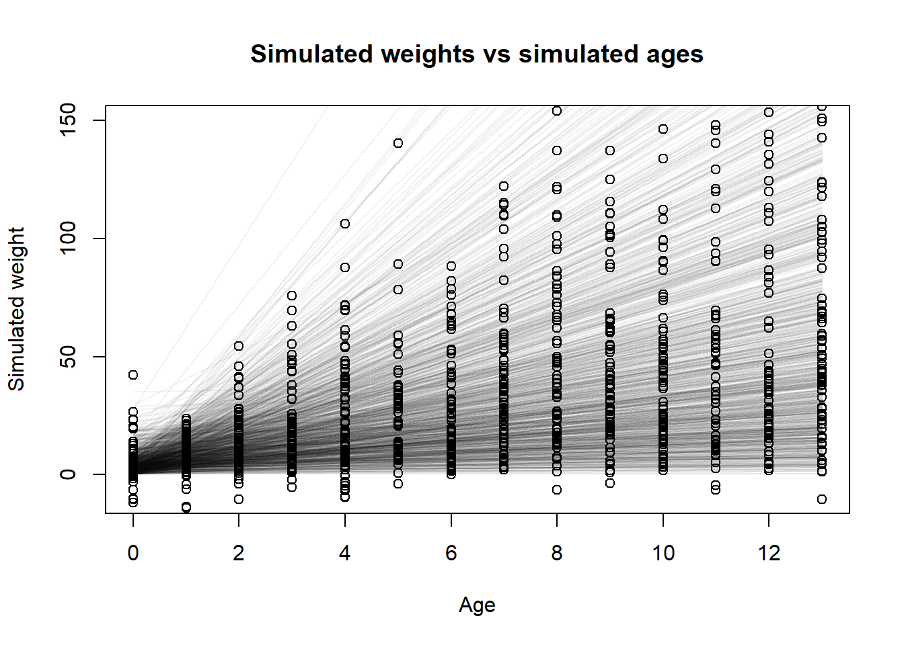
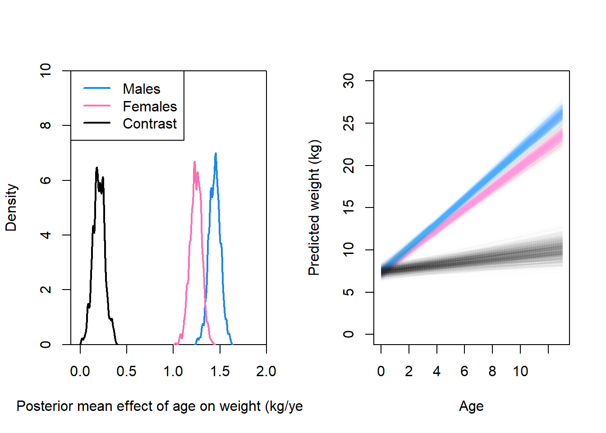

This homework covers the material from Lectures 3 and 4, and the content from book Chapter 4. The questions are reproduced almost identically from Richard McElreath’s original assignment, I did not write them. I only wrote these solutions.
1. From the Howell1 dataset, consider only the people younger than 13 years old. Estimate the causal association between age and weight. Assume that age influences weight through two paths. First, age influences height, and height influences weight. Second, age directly influences weight through age-related changes in muscle growth and body proportions.
Draw the DAG that represents these causal relationships. And then write a generative simulation that takes age as an input and simulates height and weight, obeying the relationships in the DAG.
OK, I will assume that the first paragraph is just an introduction to the homework set and the actual task for this question is in the second paragraph. Here is the DAG for this problem.
# Specify the relationships in the DAGdag <- dagitty::dagitty("dag { age -> height -> weight age -> weight }" )# Specify instructions for plotting the DAG, then do thatdagitty::coordinates(dag) <-list(x =c(age =1, height =2, weight =2),y =c(age =2, height =3, weight =1) )plot(dag)

Now we can write a generative simulation. First, let’s look at the pairwise correlations so we can get sort of an idea of the data distributions and the effects we should simulate.
Ok, so with that plot in mind we see that ages are discrete from 0 to 13, height ranges from about 50 units to 150 units, and weight ranges from about 5 units to 35 units. So our generative simulation should stay within those ranges.
# Set the seed so the simulation makes the same numbers every timeset.seed(101)# This part does the simulation and puts it into a tibble for storagesim <- tibble::tibble(# Just randomly draw an age. In the original data the ages are not# 100% even but I think this is fine.age =sample(0:13, nrow(h1), replace =TRUE),# Height and weight simulations using dag relationships and made up numbers.height =rnorm(nrow(h1), 60+5* age, 10),weight =rnorm(nrow(h1), 3+0.1* age +0.2* height, 1))# Put the columns into the same order for easier comparisons and plotsim <- sim[, c("height", "weight", "age")]pairs(sim)

I just randomly picked these numbers and fiddled with it a bit until the two plots looked similar, and I think I was able to get them pretty close for such a simple simulation using linear effects and normal errors.
2. Use a linear regression to estimate the total causal effect of each year of growth on weight.
Based on the DAG, to obtain the total causal effect of a year of growth (the interpretation of the parameter associated with the independent variable age) we want to use age as the only independent variable in the model. If we controlled for height, the parameter would estimate the direct causal effect of age, but we want the total effect. So the basic structure of our model will look like this. \[\begin{align*}
\text{weight}_i &\sim \text{Normal}(\mu, \sigma) \\
\mu &= \alpha + \beta \cdot \text{age}_i \\
\alpha &\sim \text{Prior}() \\
\beta &\sim \text{Prior}() \\
\sigma &\sim \text{Prior}()
\end{align*}\]
We will need to assign some priors to our data. In general, I tend to prefer weakly informative priors, whereas I think McElreath tends to prefer less broad priors. I’ll base my priors off the default recommended priors from the Stan devs’ prior choice recommendations. Of course they also recommend rescaling all variables before modeling, which I think is a good idea, but I won’t do it here because I’m lazy and I don’t think it’s going to be particularly useful here.
One additional constraint that we have is that the \(\alpha\) and \(\beta\) parameters should both be positive! It doesn’t make sense for someone to shrink as they get older (at least not for ages 0 to 13, maybe for seniors but not here). And it certainly doesn’t make sense for someone to ever have a negative weight, even at age zero. So we’ll use a distribution that has to be positive. I’ll choose a half-normal distribution, which is easy to sample by just taking the absolute value of a random normal sample.
These priors are quite weak, perhaps we should do a prior predictive check to visualize them before doing anything else.
set.seed(101)pps <- tibble::tibble(a =abs(rnorm(1000, 0, 5)),b =abs(rnorm(1000, 0, 5)),s =rexp(1000, 0.2) )plot(NULL,xlim =c(0, 13), ylim =c(-10, 150),xlab ="Age", ylab ="Simulated mu",main ="Prior predictive simulation of E[weight | age]")for (i in1:nrow(pps)) {curve( pps$a[i] + pps$b[i] * x,from =0, to =13, n =1000,add =TRUE, col = rethinking::col.alpha("black", 0.1) )}

Well, some of those are way too flat, and some of them are way too steep, but overall I think this encompasses a good range of possibilities. Let’s also look at the prior predictive distribution of the actual outcomes. Here, I’ll take random samples of age from a discrete uniform distribution. That’s probably not the best way to do it but it seems easiest.
# Do the simulationset.seed(102)sim_age <-sample(0:13, 1000, replace =TRUE)sim_y <-rnorm(1000,mean = pps$a + pps$b * sim_age,sd = pps$s)layout(matrix(c(1, 2), nrow =1))# Histogram of all y valueshist( sim_y,xlab ="Simulated outcome",main ="Distribution of simulated weights",breaks ="FD")# Plot showing y vs x with simulated regression lines as wellplot(NULL,xlim =c(0, 13), ylim =c(-10, 150),xlab ="Age", ylab ="Simulated weight",main ="Simulated weights vs simulated ages")for (i in1:nrow(pps)) {curve( pps$a[i] + pps$b[i] * x,from =0, to =13, n =1000,add =TRUE, col = rethinking::col.alpha("black", 0.05) )}points(sim_age, sim_y)
Well, we ended up with a few negative and a few riduculously large heights, but since we’re just doing a linear regression here I think we can live with that and let the data inform the golem that no one has negative heights. Probably we would want to either change the likelihood function or transform something (e.g. use a log link) to prevent any negative responses, but this will probably wash out in the fitting. So let’s do that.
fit <- rethinking::quap(flist =alist( weight ~dnorm(mu, sigma), mu <- a + b * age, a ~dnorm(0, 5), b ~dnorm(0, 5), sigma ~dexp(0.2) ),constraints =alist(a ="lower=0",b ="lower=0" ),data =list(weight = h1$weight,age = h1$age ) )
Hmm. Looks like quap does not take a constraints argument the way I thought it did. So I guess we will just have to settle for exponential priors, which like I mentioned, is probably the easiest way (not the best way) to get a strictly positive prior. Let’s redo the prior predictive simulation using this model. \[\begin{align*}
\text{weight}_i &\sim \text{Normal}(\mu, \sigma) \\
\mu &= \alpha + \beta \cdot \text{age}_i \\
\alpha &\sim \text{Exponential}(0.2) \\
\beta &\sim \text{Exponential}(0.2) \\
\sigma &\sim \text{Exponential}(0.2)
\end{align*}\]
set.seed(101)pps <- tibble::tibble(a =rexp(1000, 0.2),b =rexp(1000, 0.2),s =rexp(1000, 0.2) )set.seed(102)sim_age <-sample(0:13, 1000, replace =TRUE)sim_y <-rnorm(1000,mean = pps$a + pps$b * sim_age,sd = pps$s)# Histogram of all y valueshist( sim_y,xlab ="Simulated outcome",main ="Distribution of simulated weights",breaks ="FD")

# Plot showing y vs x with simulated regression lines as wellplot(NULL,xlim =c(0, 13), ylim =c(-10, 150),xlab ="Age", ylab ="Simulated weight",main ="Simulated weights vs simulated ages")for (i in1:nrow(pps)) {curve( pps$a[i] + pps$b[i] * x,from =0, to =13, n =1000,add =TRUE, col = rethinking::col.alpha("black", 0.05) )}points(sim_age, sim_y)

Yes, this definitely results in a more left-skewed distribution, but I think it will work out fine in the model (like before). So I’m not too pressed about it. Now let’s finally fit the model, for real.
fit <- rethinking::quap(flist =alist( weight ~dnorm(mu, sigma), mu <- a + b * age, a ~dexp(0.2), b ~dexp(0.2), sigma ~dexp(0.2) ),data =list(weight = h1$weight,age = h1$age ) )rethinking::precis(fit)
mean sd 5.5% 94.5%
a 7.423126 0.36170953 6.845044 8.001208
b 1.344382 0.05471435 1.256938 1.431826
sigma 2.519828 0.14708546 2.284757 2.754899
So our estimate for the total causal effect of age on weight is 1.34. In other words, we would expect that the average individual is born at weight 7.42 units, and increases in weight by 1.34 units each year.
3. Now suppose the causal association between age and weight might be different for boys and girls. Use a single linear regression, with a categorical variable for sex, to estimate the total causal effect of age on weight separately for boys and girls. How do girls and boys differ? Provide one or more posterior contrasts as a summary.
So what we are assuming here is that the effect of age is different for males and females – I am not sure whether there is a difference in weight at birth for males and females, so I will say for simplicity that there is not. We’ll use a similar model from before, but this time the effect of age will be dependent on sex.
set.seed(100)fit2 <- rethinking::quap(flist =alist( weight ~dnorm(mu, sigma), mu <- a + b[sex] * age, a ~dexp(0.2), b[sex] ~dexp(0.2), sigma ~dexp(0.2) ),data =list(weight = h1$weight,age = h1$age,# We have to add 1 for the index coding to work rightsex = h1$male +1 ),start =list(a =0.5, b =c(1, 1), sigma =0.5) )rethinking::precis(fit2, depth =2)
Ok, so I had some issues with the start values here. Probably because the priors are very diffuse, quap sometimes cannot get to the MAP from randomly sampled starting locations. However, I just had to find a seed that works, because it seems to be ignoring the start value for b (or I am specifying it incorrectly) in the error messages I get. But this one fit, so let’s go. There appears to be a slight difference between the two slope parameters, but we cannot allow ourselves to be mislead by the table of coefficients. We must compute the contrast distribution to truly understand what is happening here.
post <-extract.samples(fit2, n =1000)post$contrast <- post$b[, 2] - post$b[, 1]layout(matrix(c(1, 2), nrow =1))# Plot of posterior meansplot(NULL,xlim =c(-0.1, 2), ylim =c(0, 10),xlab ="Posterior mean effect of age on weight (kg/year)",ylab ="Density",xaxs ="i", yaxs ="i")rethinking::dens(post$b[, 2], col ="dodgerblue2", lwd =2, add =TRUE)rethinking::dens(post$b[, 1], col ="hotpink1", lwd =2, add =TRUE)rethinking::dens(post$contrast, col ="black", lwd =2, add =TRUE)legend(x ="topleft",legend =c("Males", "Females", "Contrast"),col =c("dodgerblue2", "hotpink1", "black"),lwd =c(2, 2, 2))# Plot of regression lines from posteriorplot(NULL,xlim =c(0, 13),ylim =c(0, 30),xlab ="Age",ylab ="Predicted weight (kg)")for (i in1:length(post$a)) {curve( post$a[i] + post$b[i, 1] * x,from =0, to =13, add =TRUE,col = rethinking::col.alpha("hotpink1", 0.01) )}for (i in1:length(post$a)) {curve( post$a[i] + post$b[i, 2] * x,from =0, to =13, add =TRUE,col = rethinking::col.alpha("dodgerblue2", 0.01) )}for (i in1:length(post$a)) {curve( post$a[i] + (post$b[i, 2] - post$b[i, 1]) * x,from =0, to =13, add =TRUE,col = rethinking::col.alpha("black", 0.01) )}

4. The data in data(Oxboys) are growth records for 26 boys measured over 9 periods. I want you to model their growth. Specifically, model the increments in growth from one Occassion to the next. Each increment is simply the difference between height in one occasion and height in the previous occasion. Since none of these boys shrunk during the study, all of the growth increments are greater than zero. Estimate the posterior distribution of these increments. Constrain the distribution so it is always positive – it should not be possible for the model to think that boys can shrink from year to year. Finally computer the posterior distribution of the total growth over all 9 occasions.